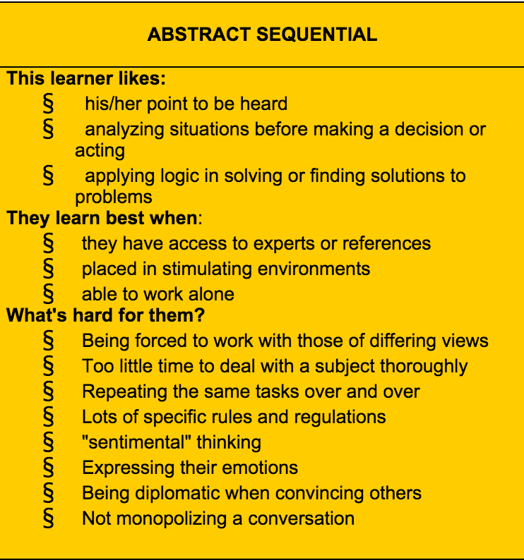

Gregorc Thinking Style
Abstract Sequential
April 5, 2015

A fortune teller?
Anthony Gregorc, a professor at University of Connecticut, might as well be a fortune teller. His research in learning styles (also known as Mind Styles Model) and the type of thinker/learner turned out to be rather spot on for me. After taking this test, I scored the strongest in a thinking style called "Abstract Sequential."
Abstract Sequential
The image above sums up everything about what an Abstract Sequential thinker/learner excels in, and has difficulty in. Based on the characteristics listed, such as 'likes his/her point to be heard,' "applying logic in solving or finding solutions to problems," having difficulty in "being forced to work with those of different views," you might think I could be a total asshole. The irony is that amongst those that know me reasonably well, I am often known as the "social butterfly" or, often, "extremely diplomatic." I say irony because perhaps on the surface I excel in diplomacy.Beneath all of it thogh, it is true that I do better when working alone, struggle when my point is not heard (at the very least acknowledged even if they don't agree with it) and being asked to make decisions or solve a problem on the spot without having had an opportunity to thoroughly research ideas. Because I am still working full-time during Phase 0, there were a few pairing sessions for which I didn't have an opportunity to thoroughly research the challenges that I was bieng asked to do. When my pairs were driving, I often found myself frustrated, particularly when my suggestions were discarded or I was not able to understand what they were attempting to do. I would often do the challenges on my own, after the pairing sessions, to make sure I thoroughly understood the concepts and make sure I could come up with my own solution. I also do have difficulty expression my emtions or monoplizing conversations. I guess despite being able to articulate ideas (when thoroughly researched), and often wanting to be heard, I am not so great with being able to articulate feelings really well. I might as well be considered the "stereo typical" programmer type. ;)
Strategy
Here are a few things I might do at DBC in order to maximize my learning:- Do my homework before I pair
- Ask help from experts
- Make an effort in expressing my ideas and opinions, even if I might be occasionally afraid of possibly offending others with my ideas or feelings(though it probably wont')
- Ask to be given a few minutes to think things over by myself or try to solve a problem, quietyly, during paring sessions